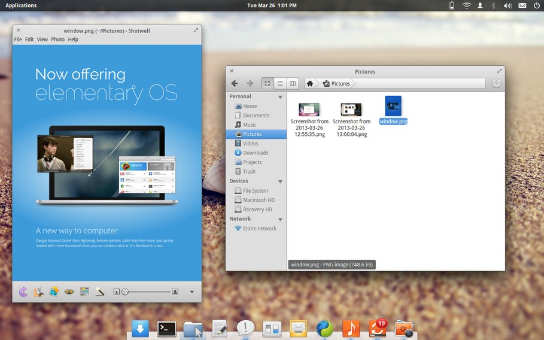

Elementary
O Elementary OS, estilizado Elementary OS, é uma distribuição de Linux baseada nos lançamentos do Ubuntu com suporte de longo prazo (LTS) e utiliza o ambiente de desktop Pantheon, que usa a linguagem de programação Vala. A sua interface de usuário visa ser intuitiva para novos usuários sem utilizar muitos recursos.
História
O
Elementary OS inicialmente começou como um conjunto de temas e
aplicativos projetados para o Ubuntu, que mais tarde se transformou em
sua própria distribuição Linux. Sendo baseado no Ubuntu, é compatível
com seus repositórios e pacotes e usava a loja de aplicativos do Ubuntu
para lidar com a instalação/remoção de software.
É baseado nos lançamentos do Ubuntu com suporte de longo prazo(LTS), que seus desenvolvedores mantêm ativamente para corrigir bugs e lançar atualizações de segurança por anos, mesmo com o desenvolvimento continuando no próximo lançamento.
O fundador do Elementary OS, Daniel Foré,
disse que o projeto não foi projetado para competir com projetos de
código aberto existentes, mas para expandir seu alcance. O projeto
também procura criar trabalhos de código aberto por meio de recompensas a
desenvolvedores em tarefas específicas de desenvolvimento. A partir do
lançamento de 2016, Loki, US$ 17.500 foram arrecadados em recompensas.

Filosofia do design
O
projeto do Elementary OS tem como meta resolver um grande número de
deficiências notadas em outras distribuições GNU/Linux, como:
- Melhor estética global com a racionalização da interface do usuário;
- Reduzir a dependência de software utilizando core apps escritos em C ou Vala;
- Diminuir a necessidade de uso do Terminal.
Apesar de não serem contrárias à filosofia GNU, essas escolhas deliberadas de design divergem o que a maioria das
distribuições GNU/Linux optam: liberdade para criar e personalizar o seu
próprio ambiente de desktop. As diretrizes de interface humana do
projeto do Elementary OS focam em uma boa usabilidade com uma gentil curva de aprendizado, ao invés da possibilidade completa de personalização do sistema. As
três regras do núcleo estabelecidas pelos desenvolvedores para si mesmos
foram "concisão", "prevenção de configurações" e "documentação mínima".[10]
Desde o seu início, o Elementary OS recebeu tanto elogios como críticas por conta do seu design, que lembra o do Mac OS X — tanto no design visual como na experiência do usuário.
Ele possui a sua própria shell chamada de Pantheon, que é dependente de outras aplicações do Elementary OS, como o Plank (uma barra de tarefas), Epiphany (o navegador web padrão) e o Scratch (um editor de texto simples). Esta distribuição usa o Gala como gerenciador de janelas, que por sua vez é baseado no Mutter.
Software incluso
- Pantheon Greeter: Gerenciador de sessões baseado no LightDM.
- Wingpanel: Painel, similar ao do GNOME.
- Slingshot: Iniciador de aplicativos localizado no WingPanel.
- Plank: Dock (baseado no Docky).
- Switchboard: Aplicativo de configurações (ou Painel de Controle).
- Epiphany: Navegador de internet também conhecido como GNOME Web.
- Geary: Cliente de e-mail escrito em Vala.
- Maya: Calendário.
- Noise: Player de áudio.
- Scratch: Editor de texto simples, comparável ao gedit ou ao leafpad.
- Pantheon Terminal: Emulador do Terminal.
- Pantheon Files: Gerenciador de arquivos.